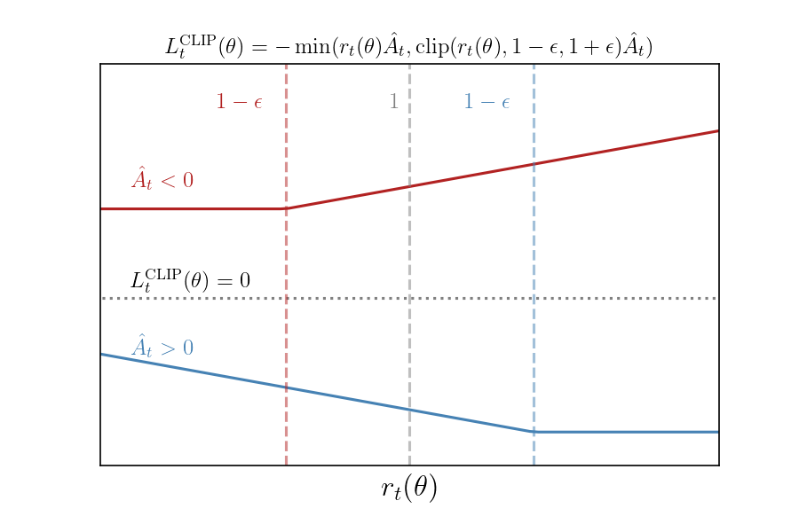

FlapJax Part 2 - Reinforcement Learning, Policy Gradients, and Proximal Policy Optimization
In this section, we will be implementing an Actor-Critic reinforcement algorithm.
Reinforcement Learning
Terminology and Deep-Q Learning
First, let us set up terminology and pose the problem a reinforcement algorithm aims to solve. Supposed we have some world which exists in states $s\in\mathcal{S}$, which describe all information about the world. For example, if our world is a chess game, the $s$ contains all information about the positions of the game pieces. $\mathcal{S}$ is the state-space containing all possible states in our world can that exist.
The world contains a given number of agents, which can perform actions $a\in\mathcal{A}$ inside the world (in the chess example, the agent could be one of the players and the actions would be moving a chess piece to a valid location.) Here, $a$ is an action taken from the action-space $\mathcal{A}$, which contains all allowed actions.
The dynamics of the world are determined by the environment $\mathcal{E}$. Think of the environment as the natural laws of the world or the game’s rules. The environment dictates how the world will transition from a state $s$ to the next state $s’$ given that the agent took the action $a$, i.e. $\mathcal{E}$ is a map from the current state and the agent action to a new state: $\mathcal{E}: \mathcal{S}\times\mathcal{A}\to\mathcal{S}$.
Reinforcement learning aims to construct an agent that performs a particular task. For example, maybe we want an agent that can play (and win) chess against another player or maybe an agent that can drive a car. In order to construct such an agent, we need a criterion for how well the agent is doing at performing the specified task. We do this by constructing a reward system $\mathcal{R}$. A reward is dished out to the agent every time the agent takes an action. The reward will be high if the action was beneficial in bringing the agent closer to performing the required task and lower otherwise. Mathematically speaking, the reward is a function that maps the current state, action, and next state to a real number $\mathcal{R}: \mathcal{S}\times\mathcal{A}\times\mathcal{S}\to\mathbb{R}$.
The agent is often described as a policy $\pi$. The policy is a function that takes the current state and outputs an action $\pi: \mathcal{S}\to\mathcal{A}$. For our purposes, $\pi$ will be a neutral network. As described above, the goal is to obtain an agent who chooses actions that bring us closer to achieving or completing the specified task. Our way of judging whether the agent chooses actions that bring us closer to the goal is through the rewards. The optimal agent is one that maximizes the reward.
Consider a trajectory taken by the agent starting from a state $s_{t}$, i.e. a sequence of states $s_t,s_{t+1},s_{t+2},\dots$ produced by the agent following its policy. Consider the return - the sum of all future rewards starting from $s_t$. The return is given by
$$ R(s_{t},a_{t};s_{t+1},a_{t+1};\dots) = r_t + r_{t+1} + r_{t+2} + \cdots = \sum_{k=0}^{\infty}r_{t+k}, $$
with $r_{i} = \mathcal{R}(s_{i}, a, s_{i+1})$ and $a_{i}$ the action taken to transition from $s_{i}\to s_{i+1}$. Our goal is to construct an agent to maximize this sum. If the rewards are finite numbers, then this sum won’t converge. The trick to make this sum converge is to make it geometric by adding in a discount factor $\gamma\in(0,1)$ to suppress future rewards. Explicitly, we multiply $r_{t+k}$ by $$\gamma^{k}$. Another way to think about the discount factor is that we prioritize larger rewards now. With a discount factor, our total reward through the trajectory is
$$ R(s_{t},a_{t};s_{t+1},a_{t+1};\dots) = r_t + \gamma r_{t+1} + \gamma^{2}r_{t+2} + \cdots = \sum_{k=0}^{\infty}\gamma^{k}r_{t+k} $$
In order to ease the explanation of the optimization algorithms, we introduce three additional concepts: the action-value function $Q^{\pi}(s,a)$, the value function $V^{\pi}(s)$ and the advantage $A^{\pi}(s,a)$. The value function is just the return obtained by following the policy $\pi$ forever. The action-value function $Q^{\pi}(s,a)$ is the return obtained by first taking the action $a$ given state $s$, then following the policy function forever afterwards. Lastly, the advantage is the difference between the action-value function and the value function $A^{\pi}(s,a) = Q^{\pi}(s,a) - V^{\pi}(s)$. Explicitly, the value and action-value functions are given by:
$$ V^{\pi}(s_{t}) = \sum_{k=0}^{\infty}\gamma^{k} \mathcal{R}(s_{t+k}, \pi(s_{t+k}), s_{t+k+1}) $$
and
$$ \begin{align} Q^{\pi}(s_{t},a_{t}) &= \mathcal{R}(s_{t},a_{t},s_{t+1}) + \sum_{k=1}^{\infty}\gamma^{k} \mathcal{R}(s_{t+k}, \pi(s_{t+k}), s_{t+k+1})\\\\ &=\mathcal{R}(s_{t},a_{t},s_{t+1}) + \gamma V^{\pi}(s_{t+1}) \end{align} $$
The advantage function $A^{\pi}(s,a)$ measures how much better it would be to take the action $a$ in state $s$ rather than just using the policy $\pi$. Notice that the value and action-value functions satisfy the following equations:
$$ \begin{align} Q^{\pi}(s_{t}, a_{t}) &= \mathcal{R}(s_{t}, a_{t}, s_{t+1}) + \gamma Q^{\pi}(s_{t+1}, \pi(s_{t+1}))\\ V^{\pi}(s_{t}) &= \mathcal{R}(s_{t}, \pi(s_{t}), s_{t+1}) + \gamma V^{\pi}(s_{t+1}) \end{align} $$
Now, consider the optimal value/action-value function, denoted as $V^{*}$ and $Q^{*}$. The optimal versions satisfy the above equation, but instead of using $a_{t} = \pi(s_{t})$, we simply take the action producing the maximum results. That is,
$$ \begin{align} Q^{*}(s_{t}, a_{t}) &= \mathcal{R}(s_{t}, a_{t}, s_{t+1}) + \gamma \max_{a_{t+1}}Q^{*}(s_{t+1}, a_{t+1})\\\\ V^{*}(s_{t}) &= \max_{a_{t}}\mathcal{R}(s_{t}, a_{t}, s_{t+1}) + \gamma V^{\pi}(s_{t+1}) \end{align} $$
These are known as Bellman equations. To optimize $Q^{\pi}$, we need to minimize the following difference:
$$ \begin{align} \delta &= Q^{\pi}(s_{t}, a_{t}) - \qty(\mathcal{R}(s_{t}, a_{t}, s_{t+1}) + \gamma \max_{a_{t+1}}Q^{\pi}(s_{t+1}, a_{t+1})) \end{align} $$
and then take our policy function to be $\pi(s) =\mathrm{argmax}_{a}Q^{\pi}(s,a)$. This is the basic approach taken for Deep-$Q$ learning: initialized a network that takes the state $s_{t}$ and outputs values for each possible action. That is, our network approximates $Q^{\pi}(s,a)$. We use $\pi(s) =\mathrm{argmax}_{a}Q^{\pi}(s,a)$ to perform actions and update our network at each step by minimize $\delta$ in the above equation.
As currently described, this process is very inefficient. More efficient implementations utilize replay-memory to train on batches of experience as well as employ multiple network to improve stabilization. However we will not go into these optimizations here. Instead we will explore a different method for determining the maximal policy.
Probabilistic Policy Functions and Policy Gradients
In the previous section, we assumed that the environment and the policy function were deterministic. It is much more common to use a policy function which is a distribution of actions given states. In this section, we will transition our policy function and environment distributions. We will then discuss policy gradients.
First, let’s consider a probabilistic environment. That is, given the state $s_{t}$, the probability of transitioning to the state $s_{t+1}$ is $\mathcal{E}(s_{t+1}|s_{t},a_{t})$. In addition, we take our policy function to be $\pi = \pi(a|s)$, i.e., a probability distribution over actions given the state $s$. Given that our system has become stochastic, the trajectories taken by an agent following $\pi$ will be stochastic. A stochastic process of this form is a Markov Decision Process, where the transition function $P(s_{t+1},s_{t}) = \mathcal{E}(s_{t+1}|s_{t},a_{t})\pi(a_{t}|s_{t})$ only depends on the current state.
As in the previous sections, our goal is to optimize our policy function in order to maximize the total return. Given that our functions are now probabilistic, the return is additionally probabilistic. Therefore, we will maximize the expectation value of the return. In order to compute the expectation value of the return, we will need to average over all possible trajectories the agent can take following the policy. This requires knowing the probability of a given trajectory. Consider a trajectory specified by the state/action pairs ending in the state $s_{t+N+1}$: $\tau=(s_{t},a_{t},\dots,s_{t+N},a_{t+N};s_{t+N+1})$. The probability of this trajectory is given by:
$$ \begin{align} P(\tau) &= \rho(s_{t})\prod_{k=0}^{N}\mathcal{E}(s_{t+k+1}|s_{t+k},a_{t+k})\pi(a_{t+k}|s_{t+k}) \end{align} $$
In this expression, $\rho(s_{t})$ specifies the probability of starting in state $s_{t}$. Now consider the return given this trajectory. The reward given the transition $s_{t},a_{t}\to s_{t+1}$ is $\mathcal{R}(s_{t},a_{t},s_{t+1})$. Thus, the return of the trajectory is
$$ \begin{align} R(\tau) &= \sum_{k=0}^{N}\mathcal{R}(s_{t+k},a_{t+k},s_{t+k+1}) \end{align} $$
To compute the expectation value of the return, we need to average the return over all possible trajectories, which requires an integration over all possible trajectories. That is, we need to perform a path integral:
$$ \begin{align} \mathbb{E}\qty[R] &= \int\mathcal{D}\tau P(\tau)R(\tau)\\\\ &= \qty[\prod_{k=0}^{N}\int\dd{a_{t+k}}\int\dd{s_{t+k}}] \int\dd{s_{t+N+1}} \rho(s_{t})\prod_{k=0}^{N}\mathcal{E}(s_{t+k+1}|s_{t+k},a_{t+k})\pi(a_{t+k}|s_{t+k}) \end{align} $$
Now supposed our policy function is parameterized by internal variables $\theta$: $\pi = \pi_{\theta}$. If we want to optimize our policy function to yield the maximum return, we need to maximize $\mathbb{E}[R]$. To do so, we can use gradient accent. The gradient of the expectation value of $R$ is:
\begin{align} \mathbb{E}_{\tau}\qty[R] &= \int\mathcal{D}\tau R(\tau) \nabla_{\theta}P_{\theta}(\tau)\\\\ &= \int\mathcal{D}\tau R(\tau) P_{\theta}(\tau)\nabla_{\theta}\log P_{\theta}(\tau)\\\\ &= \mathbb{E}_{\tau}\qty[R(\tau)\nabla_{\theta}\log P_{\theta}(\tau)] \end{align}
were we used $\nabla f = f \nabla\log f$. However, note that $\nabla\log P_{\theta}\tau$ is
\begin{align} \nabla_{\theta}\log P(\tau) &= \nabla_{\theta}\log\rho(s_{t}) + \sum_{k=0}^{N}\nabla_{\theta}\log\mathcal{E}(s_{t+k+1}|s_{t+k},a_{t+k}) + \sum_{k=0}^{N}\nabla_{\theta}\log\pi_{\theta}(a_{t+k}|s_{t+k})\\\\ &= \sum_{k=0}^{N}\nabla_{\theta}\log\pi_{\theta}(a_{t+k}|s_{t+k}) \end{align}
(since only $\pi$ depends on $\theta$.) Therefore, the expectation value of the return is:
\begin{align} \mathbb{E}_{\tau}\qty[R] &= \mathbb{E}_{\tau}\qty[R(\tau) \sum_{k=0}^{N}\nabla_{\theta}\log\pi_{\theta}(a_{t+k}|s_{t+k}) ] \end{align}
In practice, it is impractical to perform the functional integral needed to compute this expectation value. Instead, we make use Monte Carlo integration to compute the expectation value. Recall that:
\begin{align} \int_{\Omega}\dd{\vec{x}}f(\vec{x}) \sim \frac{1}{N}\sum_{\vec{x}_{i}}f(\vec{x}_{i}) \end{align}
which is true if sampling $\vec{x}\sim\Omega$ uniformly. If instead we sample from a distribution $p(\vec{x})$, then we have
\begin{align} \int_{\Omega}\dd{\vec{x}}f(\vec{x}) \sim \frac{1}{N}\sum_{\vec{x}_{i}}\frac{f(\vec{x}_{i})}{p(\vec{x}_{i})} \end{align}
Thus, if we sample our trajectories from $P(\tau)$ (which is what we’re doing when we let follow the policy function in our stochastic environment), our expectation value of the return is asymptotic (as $N\to\infty$) to
\begin{align} \mathbb{E}_{\tau}\qty[R] &\sim \frac{1}{N}\sum_{\tau_{i}}R(\tau_{i}) \sum_{k=0}^{N}\nabla_{\theta}\log\pi_{\theta}(a^{\tau_{i}}_{t+k}|s^{\tau_{i}}_{t+k}) ] \end{align}
Thus, to optimize our policy function to yield the maximum return, we collect $N$ trajectories, perform a gradient decent on $-\mathbb{E}[R]$ and repeat until we converge to the optimal policy.
An important thing to note is the our above expression can be reduced. In the current form, we’re weighting $\nabla_{\theta}\log\pi_{\theta}(a_{k}|s_{k})$ by the entire return $R(\tau)$. It turns out that the expectation value returns accumulated prior to $s_{k}$ will vanish. To show this, consider a term in the expectation value of the form:
\begin{align} \mathcal{R}(s_{m},a_{m},s_{m+1})\nabla_{\theta}\log\pi_{\theta}(a_{n}|s_{n}) \end{align}
with $t < n,m < t + N$. The expectation value of this term can be written as:
\begin{align} I_{m,n} &= \mathbb{E}[\mathcal{R}(s_{m},a_{m},s_{m+1})\nabla_{\theta}\log\pi_{\theta}(a_{n}|s_{n})] \\\\ &= \qty(\prod_{k=0}^{N}\int\dd{a_{k}}\dd{s_{k}}P\qty(s_{k+1},s_{k}))\rho(s_{t})\int\dd{s_{t+N+1}} \mathcal{R}(s_{m},a_{m},s_{m+1})\nabla_{\theta}\log\pi_{\theta}(a_{n}|s_{n}) \end{align}
Note that we can safely integrate over all $a_{k},s_{k}$ for $k>m+1,n$. This is because the probability of having some tail trajectory (unweighted by $R$ or $\nabla_{\theta}\log\pi_{\theta}$) is one. Thus,
\begin{align} I_{m,n} &= \qty(\prod_{k=0}^{\mathrm{max}(m+1,n)}\int\dd{a_{k}}\dd{s_{k}}P\qty(s_{k+1}|s_{k},a_{k})\pi\qty(a_{k}|s_{k})) \rho(s_{t})\mathcal{R}(s_{m},a_{m},s_{m+1})\nabla_{\theta}\log\pi_{\theta}(a_{n}|s_{n}) \end{align}
Now suppose $m < n$. In this case, we can peel off the last integrals of $a_{n},s_{n},s_{n+1}$, obtaining
\begin{align} \int\dd{s_{n}}\int\dd{a_{n}}\int\dd{s_{n+1}} P\qty(s_{n+1}|s_{n},a_{n})\pi(a_{n}|s_{n}) P\qty(s_{n}|s_{n-1},a_{n-1})\pi(a_{n-1}|s_{n-1}) \nabla_{\theta}\log\pi_{\theta}(a_{n}|s_{n}) \end{align}
The integral over $s_{n+1}$ can be performed and the result is 1. Thus, we are left with
\begin{align} \int\dd{s_{n}} P\qty(s_{n}|s_{n-1},a_{n-1})\pi(a_{n-1}|s_{n-1}) \int\dd{a_{n}} \pi(a_{n}|s_{n}) \nabla_{\theta}\log\pi_{\theta}(a_{n}|s_{n}) \end{align}
The last integral can be evaluated. To evaluate, we first rewrite the integrand using $\pi(a_{n}|s_{s})\nabla_{\theta}\log\pi_{\theta}(a_{n}|s_{s}) = \nabla_{\theta}\pi_{\theta}(a_{n}|s_{n})$. Then, pulling the derivative outside the integral, we end up with:
\begin{align} \int\dd{a_{n}} \pi(a_{n}|s_{n}) \nabla_{\theta}\log\pi_{\theta}(a_{n}|s_{n}) &= \int\dd{a_{n}} \nabla_{\theta} \pi(a_{n}|s_{n})\\\\ &= \nabla_{\theta} \int\dd{a_{n}} \pi(a_{n}|s_{n})\\\\ &= 0 \end{align}
where we used the fact that $\int\pi(a_{n}|s_{n})\dd{a_{n}} = 1$.
In the case where $m \geq n$, we cannot perform the last few steps. This is because the tail trajectory beyond $n$ will be weighted by $\mathcal{R}(s_{m},a_{m}, s_{m+1})$. Since $\mathcal{R}(s_{m}, a_{m}, s_{m+1})$ is dependent on the actions taken in steps before $m$, the integral over the tail trajectory will also be dependent on previous actions and hence dependent on $a_{n}$. Thus, the integral over $a_{n}$ will have additional factors from the tail trajectory that prevent us from evaluating the integral analytically.
These results tell use that only future rewards matter inside the expectation value. This allows us to reduce the terms inside the expectation value of the return to:
\begin{align} \mathbb{E}_{\tau}\qty[R] &= \mathbb{E}_{\tau}\qty[ \sum_{k=0}^{N}\nabla_{\theta}\log\pi_{\theta}(a_{t+k}|s_{t+k}) \sum_{n=k}^{N}\mathcal{R}(s_{t+n},a_{n},s_{t+n+1}) ] \end{align}
Another important fact is that we are free to add any function $b$ to the above expression that only depends on state, as it will drop out of the expectation value. A typical approach is to augment the above expression as:
\begin{align} \mathbb{E}_{\tau}\qty[R] &= \mathbb{E}_{\tau}\qty[ \sum_{k=0}^{N}\nabla_{\theta}\log\pi_{\theta}(a_{t+k}|s_{t+k}) \sum_{n=k}^{N}\qty(\mathcal{R}\qty(s_{t+n},a_{n},s_{t+n+1}) - b(s_{t})) ] \end{align}
Here $b$ is known as the baseline. Adding it has no effect on the expectation value, but it often helps in the training of the policy. The approach we will end up taking is to set $b$ to be the value function. Then, the above expression will reduce to
\begin{align} \mathbb{E}_{\tau}\qty[R] &= \mathbb{E}_{\tau}\qty[ \sum_{k=0}^{N}\nabla_{\theta}\log\pi_{\theta}(a_{t+k}|s_{t+k}) \hat{A}_{t+k} ] \end{align}
where $\hat{A}_{t} = Q^{\pi}(s_{t},a_{t}) - V^{\pi}(s_{t})$ is the advantage. This has the benefit that in cases where the advantage is zero, i.e., when we are accurately predicting the value function, the term doesn’t contribute, allowing us to focus on situations where we are incorrectly predicting the value function. See this post for a proof that using the action-value $Q^{\pi}(a_{t}|s_{t})$ results in the same expectation value.
Proximal Policy Optimization
Proximal Policy Optimization (PPO) is similar in spirit to the concepts described above but aims to be more stable and efficient. It puts together ideas from Advantage Actor-Critic (A2C), Trust-Region Policy Optimization (TRPO) and asynchronous methods. We will describe the basic principles of the various algorithm then put them together to reproduce PPO.
First, we will be using an Actor-Critic configuration where we have an actor network that computes the policy $\pi_{\theta}(a|s)$ and a critic network which computes the value function $V_{\theta}(s)$. These networks can share parameters or have separate parameters. The goal is to have the actor-critic maximize the expectation value of the return. The TRPO algorithm suggest using the following surrogate function:
$$ \underset{\theta}{\mathrm{maximize}}\quad \hat{\mathbb{E}}_{t}\qty[ \frac{\pi_{\theta}(a_{t}|s_{t})}{\pi_{\theta_{\mathrm{old}}}(a_{t}|s_{t})} \hat{A}_{t} ] $$
subject to the constraint that the relative entropy (KL divergence) is less than a hyperparameter $\delta$
$$ \begin{align} \hat{\mathbb{E}}_{t}\qty[\mathrm{KL}\qty[\pi_{\theta_{\mathrm{old}}}(\cdot|s_{t}),\pi_{\theta}(\cdot|s_{t})]] \leq \delta \end{align} $$
Here $\pi_{\theta_{\mathrm{old}}}$ represents the distribution from the previous iteration. This expectation value looks different from the one we developed in our previous exploration into policy gradients, but it turns out that if $\vb*{\theta_{\mathrm{old}}}$ is not too far off from $\vb*{\theta}$ then the two expression yield the same gradient up to terms of order $\vb*{\theta}-\vb*{\theta_{\mathrm{old}}}$:
$$ \begin{align} \grad_{\vb*{\theta}} \frac{\pi_{\vb*{\theta}}}{\pi_{\vb*{\theta}_{\mathrm{old}}}} &= \frac{\pi_{\vb*{\theta}}}{\pi_{\vb*{\theta}_{\mathrm{old}}}} \grad_{\vb*{\theta}}\log\pi_{\vb*{\theta}}\\\\ &= \frac{ \pi_{\vb*{\theta_{\mathrm{old}}}} + \delta\vb*{\theta}\cdot\eval{\grad_{\vb*{\theta}}\pi}_{\vb*{\theta}_{\mathrm{old}}} + \cdots }{ \pi_{\vb*{\theta}_{\mathrm{old}}} } \grad_{\vb*{\theta}}\log\pi_{\vb*{\theta}}\\\\ &= \grad_{\vb*{\theta}}\log\pi_{\vb*{\theta}} + \order{\delta\vb*{\theta}} \end{align} $$
with $\delta\vb*{\theta} = (\vb*{\theta} - \vb*{\theta}_{\mathrm{old}})$. Thus, maximizing the surrogate yields the same result as maximizing the expectation of the return since the two gradients are identical at the extrema. The constraint on the relative entropy ensures that we don’t stray too far from the old values, keeping $\delta\vb*{\theta}$ small.
PPO uses a similar surrogate, but doesn’t use the relative entropy constraint (but there are versions which employ the relative entropy.) Instead, PPO uses the following:
$$ L^{\mathrm{CLIP}}_{t}(\theta) = -\min(r_{t}(\theta)\hat{A}_{t}, \mathrm{clip}(r_{t}(\theta), 1-\epsilon,1+\epsilon)\hat{A}_{t}) $$
where $r_{\vb*{\theta}} = \pi_{\vb*{\theta}} / \pi_{\vb*{\theta}_{\mathrm{old}}}$. In this form, it’s not very intuitive what’s going on. It is instructive to consider what this function does when the advantage is positive or negative:
$$ \begin{align} \hat{A}_{t} > 0: \qquad L^{\mathrm{CLIP}}_{t}(\theta) &=-\min(r_{t}, 1+\epsilon)\hat{A}_{t}\\\\ \hat{A}_{t} < 0: \qquad L^{\mathrm{CLIP}}_{t}(\theta) &=-\max(r_{t}, 1-\epsilon)\hat{A}_{t} \end{align} $$
This loss function looks as follows:
We can see that, if we’re minimizing $L^{\mathrm{CLIP}}_{t}(\vb*{\theta})$, then the clipping cuts off how much we’re allowed to minimize. For example, if $\hat{A}_{t}>0$, then increasing the probability $\pi_{\theta}(a|s)$ beyond a certain point has not effect on the loss function, specifically when $r_{t}(\theta) > 1 + \epsilon$. When $\hat{A}_{t}<0$, then we have the reverse situation: decreasing the probability will have no effect beyond $r_{t}(\theta) < 1-\epsilon$. Thus, there is no incentive to move $r_{t}(\vb*{\theta})$ further than $\epsilon$, as moving further than $\epsilon$ makes the gradient from $L^{\mathrm{CLIP}}_{t}$ zero.
Next, let’s discuss the advantage function. PPO uses the Generalized Advantage Estimation (GAE). The GAE used by PPO is given by the following:
$$ \begin{align} \hat{A}_{t} &= \delta_{t} + (\gamma\lambda)\delta_{t+1} + \cdots + (\gamma\lambda)^{N}\delta_{t+N}\\\\ \delta_{t} &= r_{t} + \gamma V(s_{t+1}) - V(s_{t}) \end{align} $$
where $N$ is the number of times steps taken for the trajectory (fixed for all trajectories), $\gamma$ is the discount and $\lambda$ is an additional hyperparameter. For $\lambda=1$, this reduces to the standard advantage with a finite number of steps. See this paper for a detailed explanation of GAE.
Since we have a critic, we will add a loss function to train the critic. We use the mean-squared-error for the critic:
$$ \begin{align} L_{t}^{\mathrm{VF}}(\theta) &= \qty(V_{\theta}(s_{t}) - V_{t}^{\mathrm{targ}})^2 \end{align} $$
where $V_{t}^{\mathrm{targ}}$ is the actual return observed using the policy. PPO uses one additional loss function used to encourage exploration. We add a loss function that aims to increase the entropy of the policy
$$ \begin{align} L_{t}^{\mathrm{entropy}}(\theta) &= -S[\pi_{\theta}] \end{align} $$
Thus, our total loss function is given by:
$$ \begin{align} L_{t}(\theta) &= \hat{\mathbb{E}}_{t}\qty[ L_{t}^{\mathrm{CLIP}}(\theta) + c_1 L_{t}^{\mathrm{VF}}(\theta) + c_2 L_{t}^{\mathrm{entropy}}(\theta) ] \end{align} $$
where $c_{1}$ and $c_{2}$ are additional hyperparameters. The last item we need to discuss is the asynchronous evaluation. Taking inspiration from A2C, we improve training speed and batch size by running multiple trajectories at the same time. For example, if we run $M$ separate trajectories at the same time, each for $N$ time steps, then we end up with a batch of size $MN$.
These are all the elements of PPO. The full algorithm is as follows:
$\textbf{for}$ iteration $\leftarrow 1,\text{MaxSteps}$ $\textbf{do}$
$\quad$// Collect trajectories
$\quad\textbf{for}$ actor $\leftarrow 1, M$ $\textbf{do}$
$\quad\quad\textbf{for}$ $t$ $\leftarrow 1, N$ $\textbf{do}$
$\quad\quad\quad$Step environment using $\pi_{\theta}$
$\quad\quad\quad$Store $V_{t}$, $r_{t}$, $a_{t}$, $s_{t}$, $\log\pi(a_{t}|s_{t})$
$\quad\quad\textbf{end}$ $\textbf{for}$
$\quad\quad$Compute GAEs $\hat{A}_{1},\dots,\hat{A}_{N}$
$\quad\textbf{end}$ $\textbf{for}$$\quad$// Optimize
$\quad n_{\mathrm{batch}} \leftarrow \text{mini_batch_size}$
$\quad N_{\mathrm{batches}} \leftarrow MN / n_{\mathrm{batch}}$
$\quad\textbf{for}$ batch $\leftarrow 1, N_{\mathrm{batches}}$ $\textbf{do}$
$\quad\quad$ Extract $\log\pi_{\vb*{\theta}_{\mathrm{old}}}$, action $a$ state $s$, value $V$, advantage $\hat{A}$ from trajectory
$\quad\quad$ Compute $r_{\vb*{\theta}} = \exp(\log\pi_{\vb*{\theta}}(a) - \log\pi_{\vb*{\theta}_{\mathrm{old}}})$
$\quad\quad$ Compute loss $L_{t}(\vb*{\theta})$
$\quad\quad$ Back-propagate to update $\vb*{\theta}$
$\quad\textbf{end}$ $\textbf{for}$
$\textbf{end}$ $\textbf{for}$
References
- The PPO paper: PP0
- The TRPO paper: TRPO
- Paper on Generalized advantage functions: GAE
- Paper on Asynchronous Actor-Critic A2C
- Paper on Deep Q-Networks: DQN
- Paper on distributional rewards: Distributional Rewards
- Paper on per-experience replay: PER
- Paper on double Deep-Q networks: DDQN, DDQN
- DRQN
- Paper on Actor-Critic methods: Actor Critc